Thank you for purchasing my item. If you have any questions that are beyond the scope of this help file, please feel free to email via my user page contact form. Thanks so much!
This is the Wordpress plugin of 'HTML5 Video Player & Gallery'. You can create as many video player as you want and have multiple instances of players in your site. You can have unlimited number of videos per every created player. You can play HTML5 videos (mp4,webm) , Youtube and Vimeo videos all in one player.
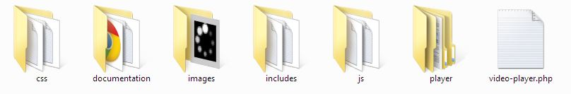
video-player.php - main php file
css - player interface (5 skins)
documentation - for WordPress installation
images - source folder for your images in player
includes - php plugin files
js - javascript source files
player - jQuery plugin of the video player (if you don't use 'embed code' option you can remove this folder)
To install 'Video Player' plugin, unzip 'video-player.zip' into 'wp-content/plugins'.
- Go to your 'wordpress' folder and find 'wp-content'
- go to 'plugins' folder
- 'plugins' folder structure
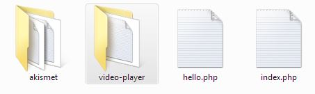
Once you have placed 'video-player' into 'wp-content/plugins' go to your Wordpress Admin page and activate the plugin
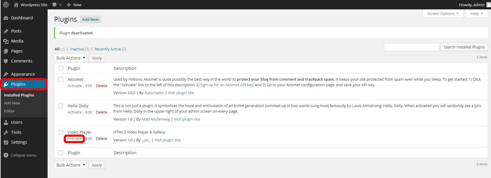
Or other way to install plugin is to go to Plugins -> Add New -> Upload, select the 'video-player.zip' and click 'Install Now'.
Once you have video-player activated you can start creating your player. To create player go to Video Player admin page:
Click on the Settings -> Video Player
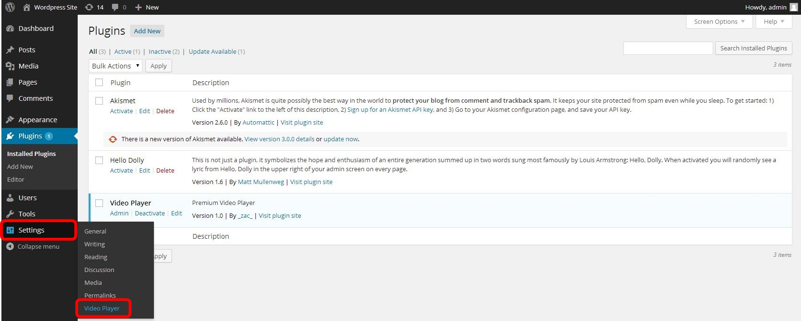
or click on the Plugins -> Admin
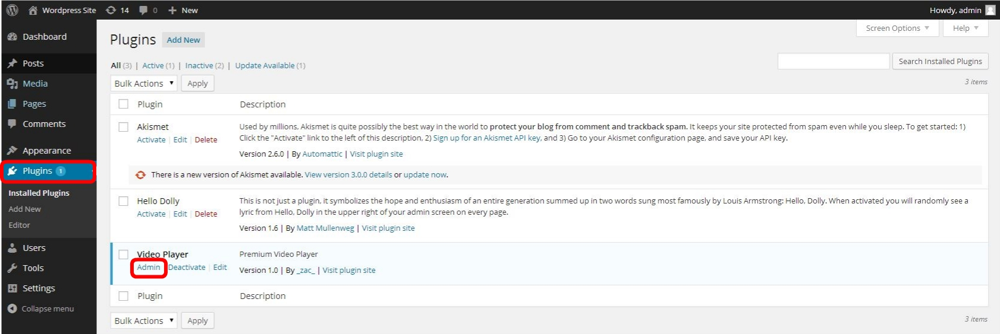
Then, you can create your first Video Player by clicking either 'Add New' or 'Create New Player'
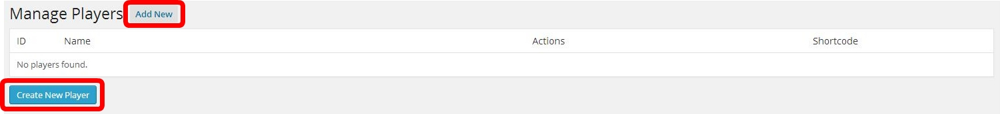
After that you need to edit and save settings for your video-player in the 'Options' section (Video Player Width, Video Player Height, set Skin, Autoplay...) and add videos in the 'Videos' section on the right side.
You can from here go back to the list of your created video players (if you wish to have multiple players)
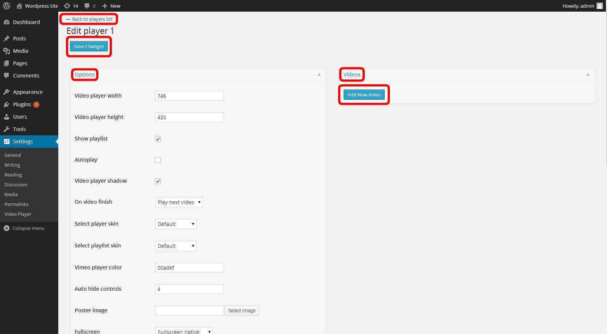
You can have player with 1 video (turn off 'Show playlist' in 'Options') or create playlist with unlimited number of videos (turn on 'Show playlist' in 'Options').
To add videos click on the 'Add New Video', also, you can delete video by clicking 'Delete'
You ca re-arrange videos in playlist by clicking and dragging video section up and down.
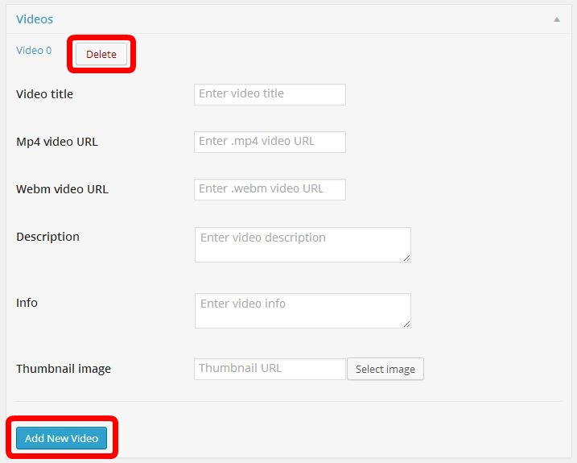
You can have HTML5 videos or Youtube videos or Vimeo videos in your player.
Adding HTML5 video:
To add HTML5 video you need to provide Mp4 and Webm formats and set videoType to HTML5:
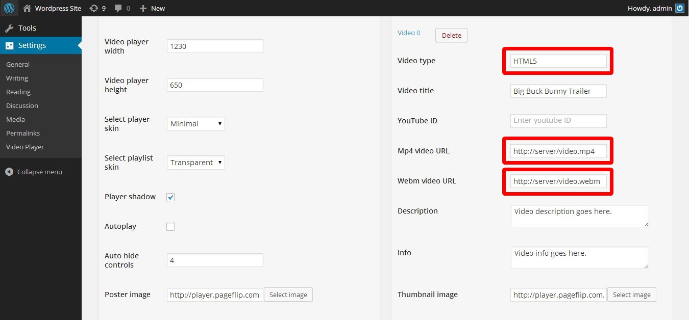
Adding Youtube video:
To add Youtube video you need to insert youtubeID (last text part of youtube URL) and set videoType to youtube:
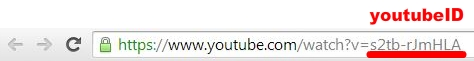
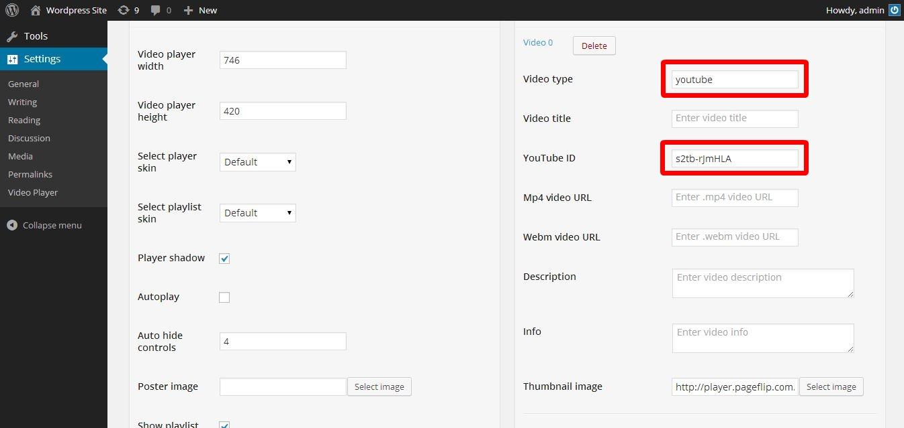
Adding VIMEO video:
To add Vimeo video you need to insert vimeoID (last text part of vimeoURL) and set videoType to vimeo:
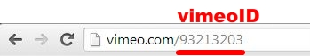
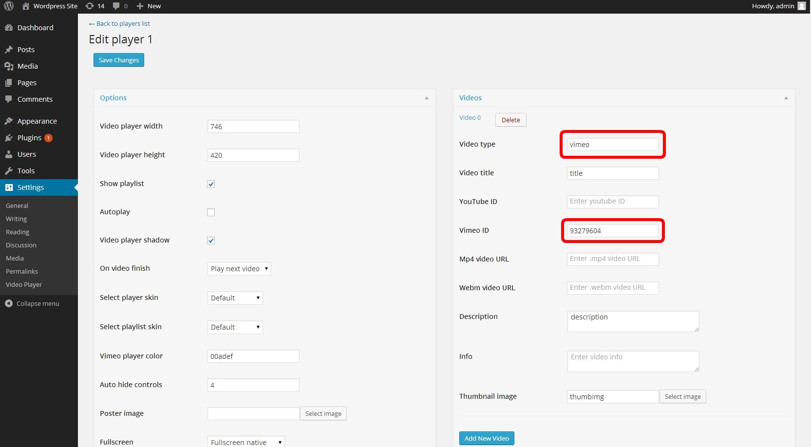
To embedd 'Video Player' you need to use shortcode [video_player id="YOUR_PLAYER_ID"] after you have your player saved.
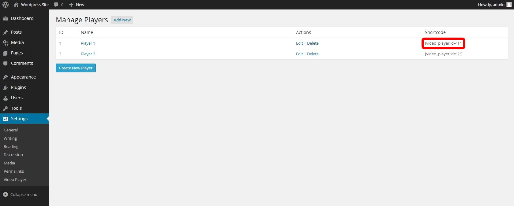
You can insert 'Video Player' into any page or post.
Insert into post:
- go to Posts -> Edit Post (or new post) and insert your shortcode.
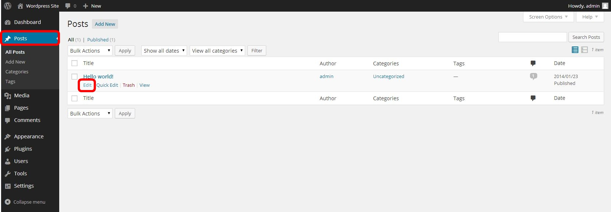
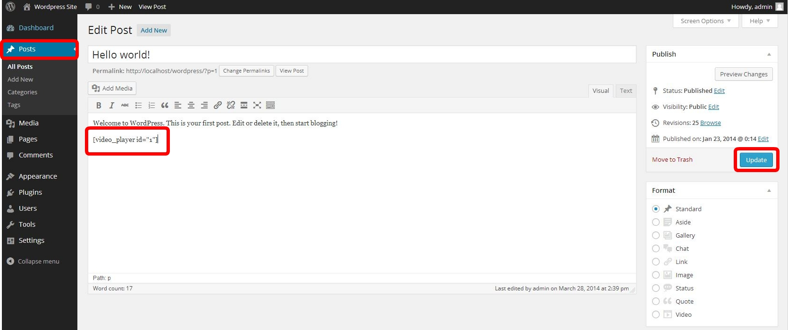
- click 'Update' to update your post
Insert into page:
- go to Pages-> Edit Page (or new page) and insert your shortcode.
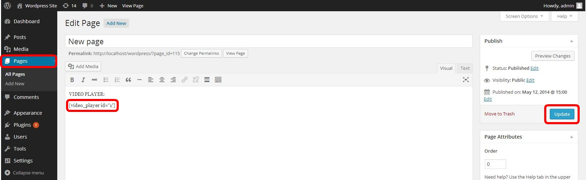
- click 'Update' to update your page
Examples of 'Video Player' in different themes:
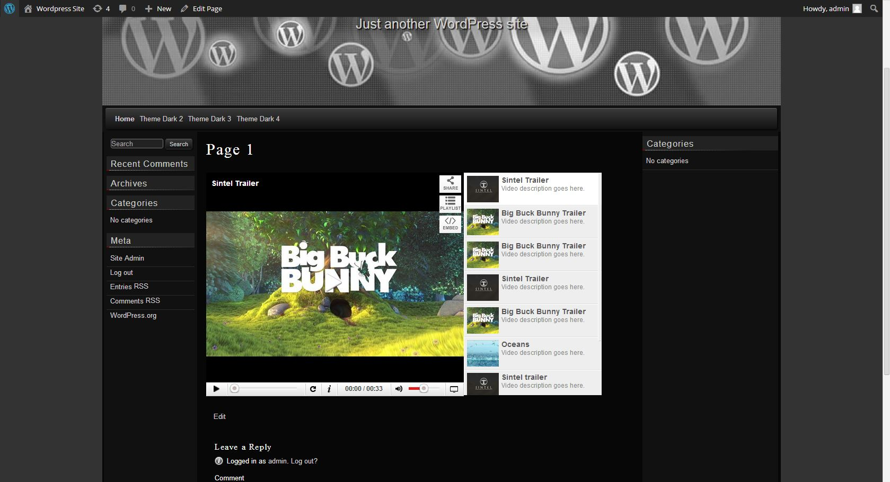
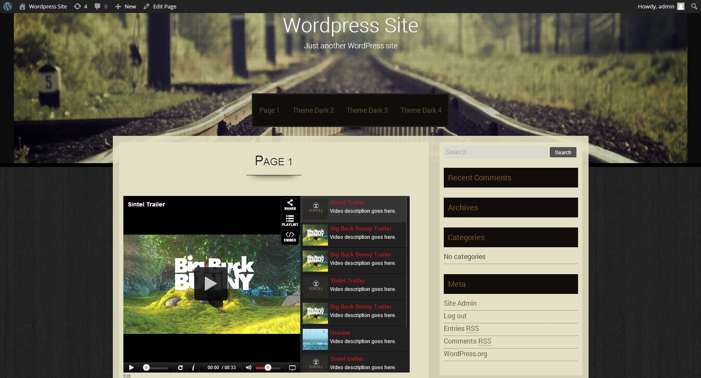
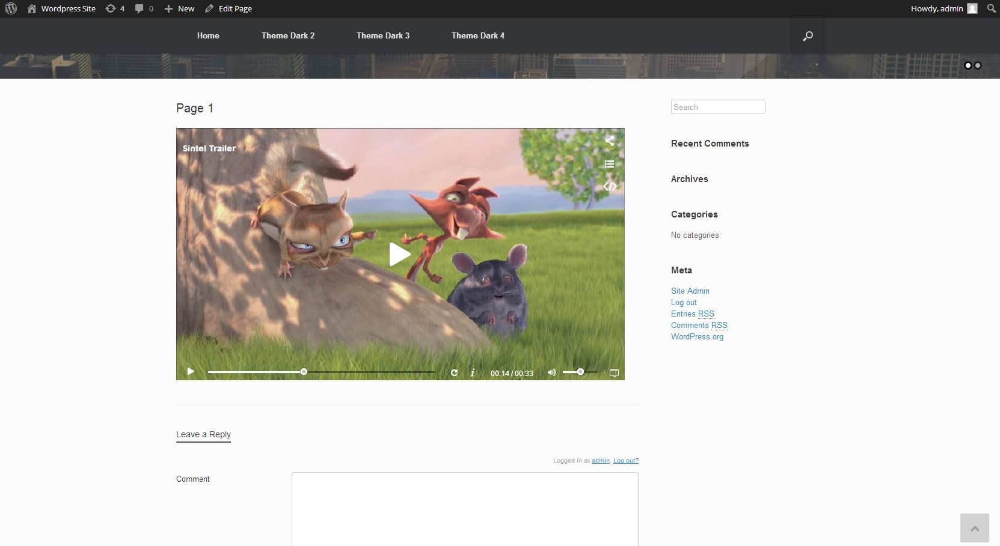
You can insert multiple players into one page or post. To do that create players and copy/paste their shortcodes into page or post:
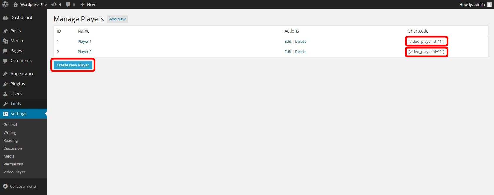
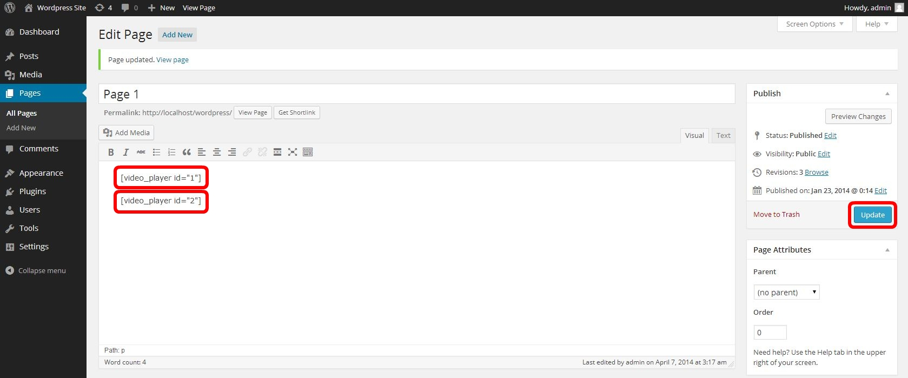
{kind=link}
{kind=link}